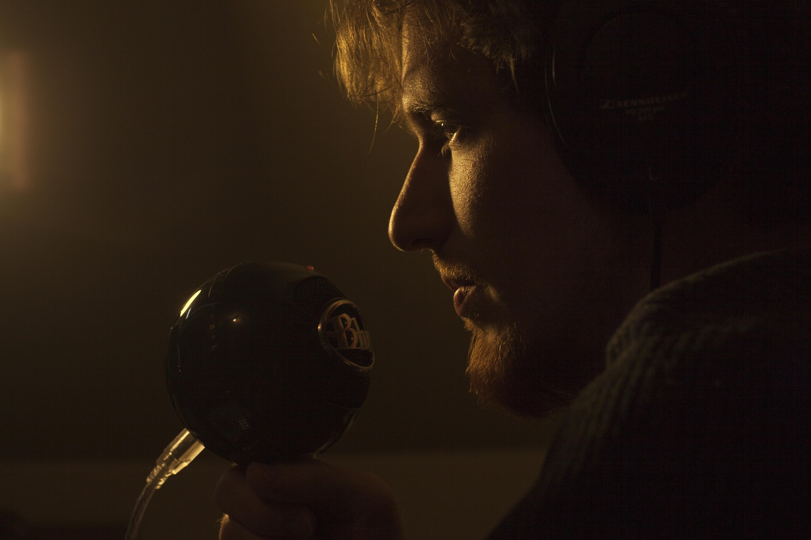

We create moments that refuse to disappear.
Darkness is not the absence of light. It is the space where ideas begin to breathe, where silence becomes visual, and where every detail has a reason to exist.

Architecture dissolves into shadow. Light becomes the only remaining structure.
Every line has weight. Every movement has purpose.
A fragment suspended between memory, movement, and complete silence.
Stay curious. Follow the signal. Look closer. The most interesting things are usually hidden between the obvious.